SCOBY — symbiotic culture of bacteria and yeast — provides opportunities to create sustainable applications in biodyes, bioplastics, and biofabrics. This project explores motherhood as a methodology, world-view, and value system for more ethical, sustainable design.
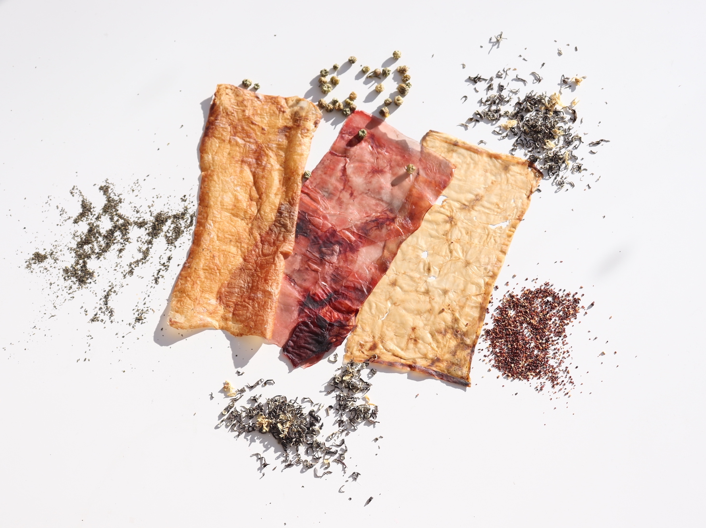
This project began by testing five sugar alternatives — brown sugar, fructose, glucose, honey, and stevia — against a control mother culture, to understand how substrate affects SCOBY growth. Results showed syrups caused mold, while stevia grew a smoother SCOBY sheet than white sugar.
A follow-up experiment used rotten fruits with varying sugar content: blackberries, apples, and bananas. The blackberry SCOBY was the most successful — the only one that had not molded — pointing to fruit acidity and sugar content as key variables.
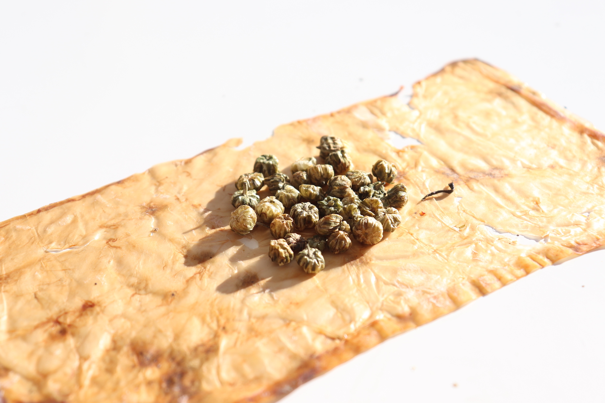
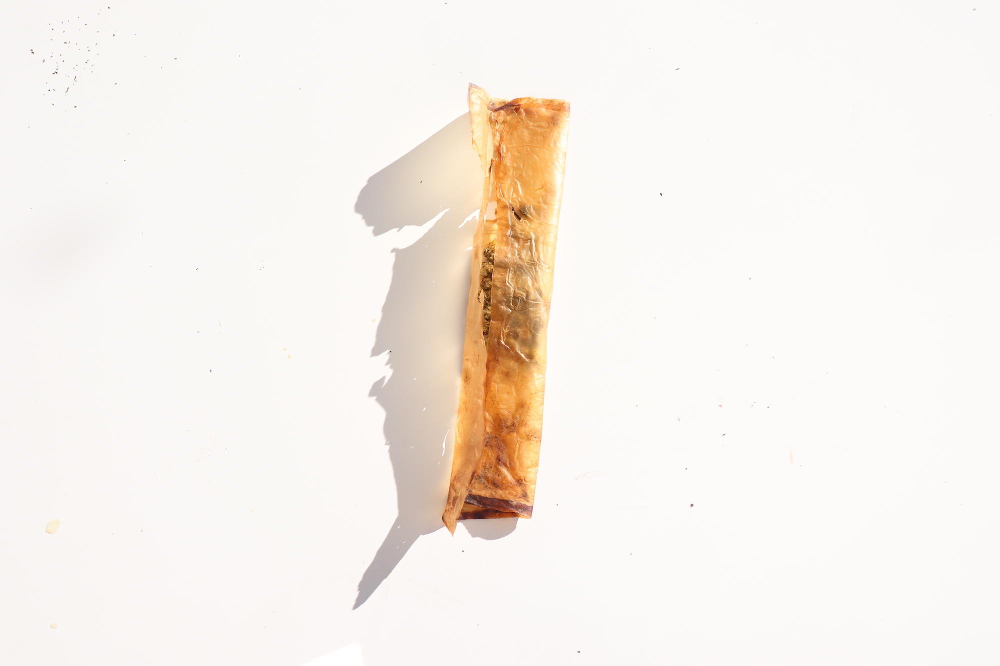
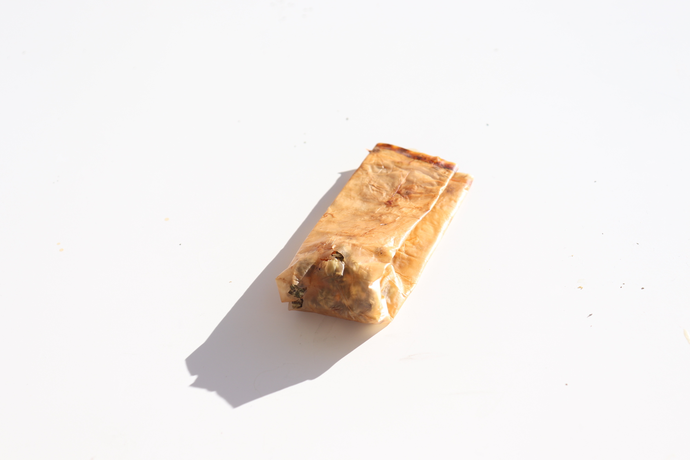
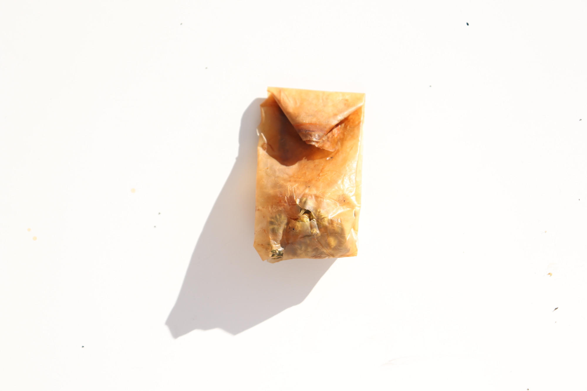
Each experiment ran in weekly observation cycles, tracking growth rate, surface texture, mold presence, and structural integrity. The variables were simple but the outcomes unpredictable — biological design requires patience and a tolerance for failure as data.
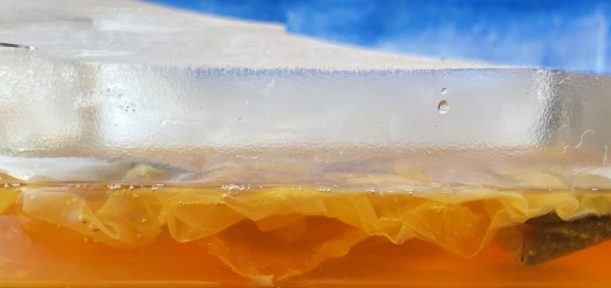
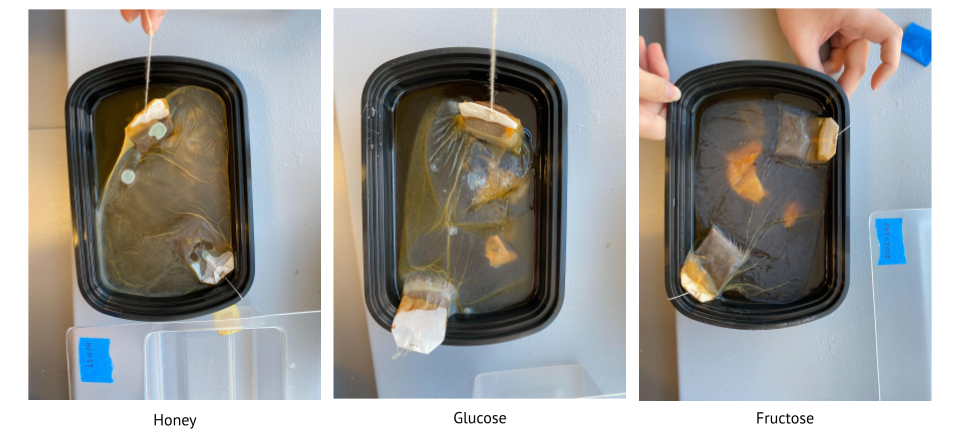
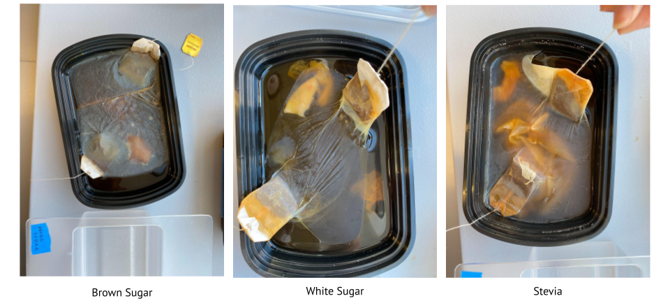
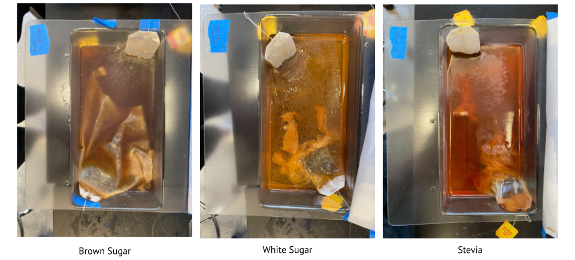
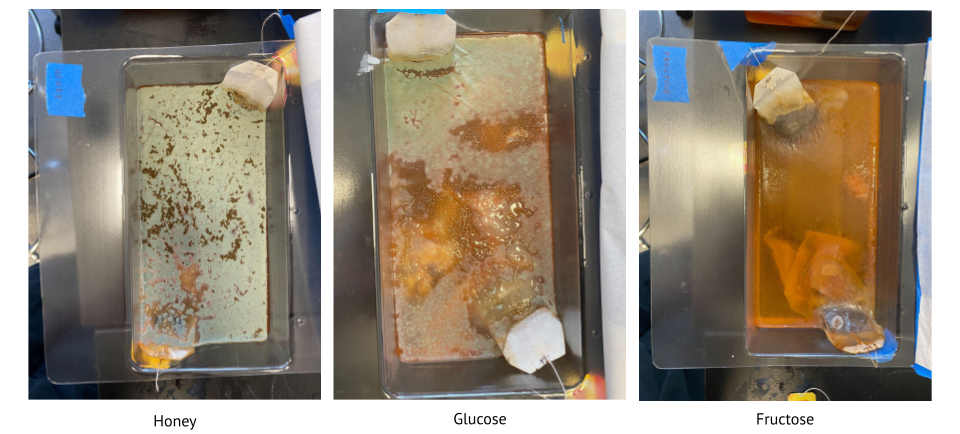
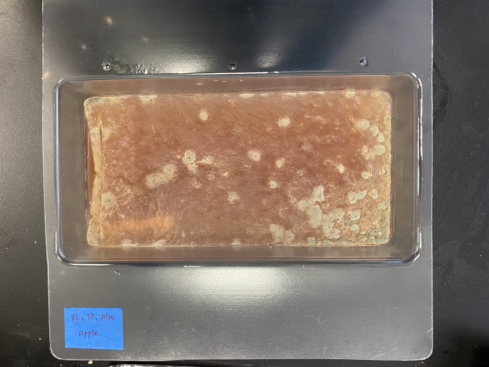
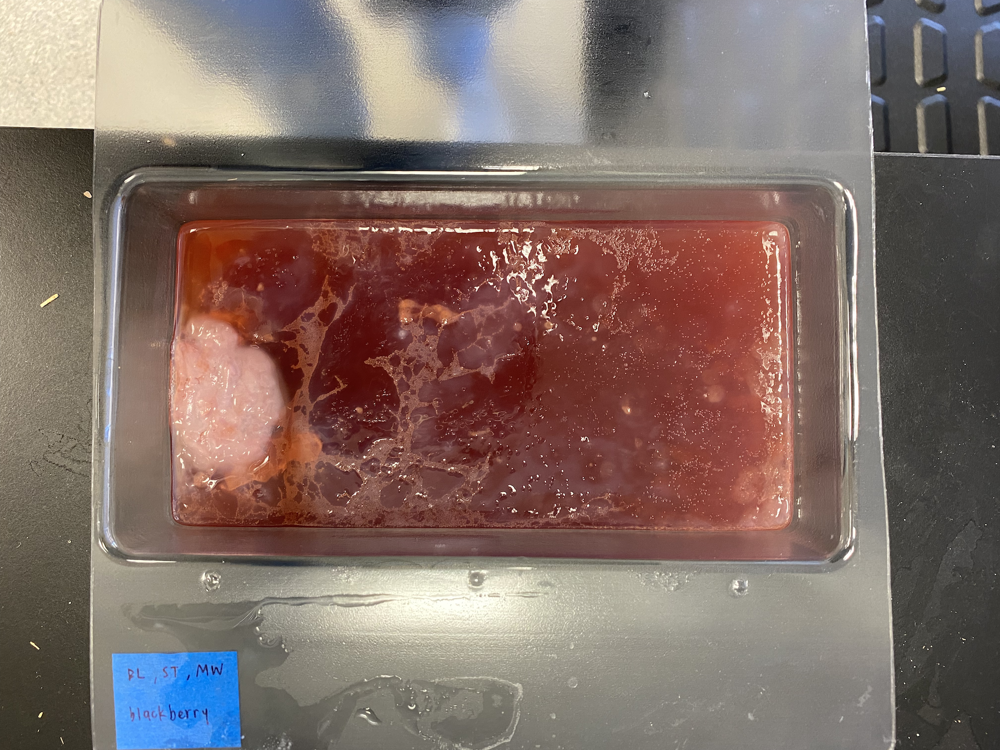
Our mother SCOBY was freeze dried, to which we discovered it mostly consisted of sugar. Each of our three sheets of SCOBY were air dried, folded, and sewn into tea bags holding teas of various sizes. As a material, SCOBY dissolves and takes on the taste of its contents when boiled, allowing tea drinkers to customize their tea bags while avoiding the microplastics and waste that comes with store bought tea bags.
These tea bags also serve as a model for sustainable designs. Through its creation, a relationship is developed between the mother (us) and the material (SCOBY). We care for and nurture it, and thus, are completely knowledgable of where our materials and products come from. It creates a cycle in which the SCOBY feeds off tea, and is later used to create tea bags, but the media it sits in is also fermented to tea (commonly known as kombucha).
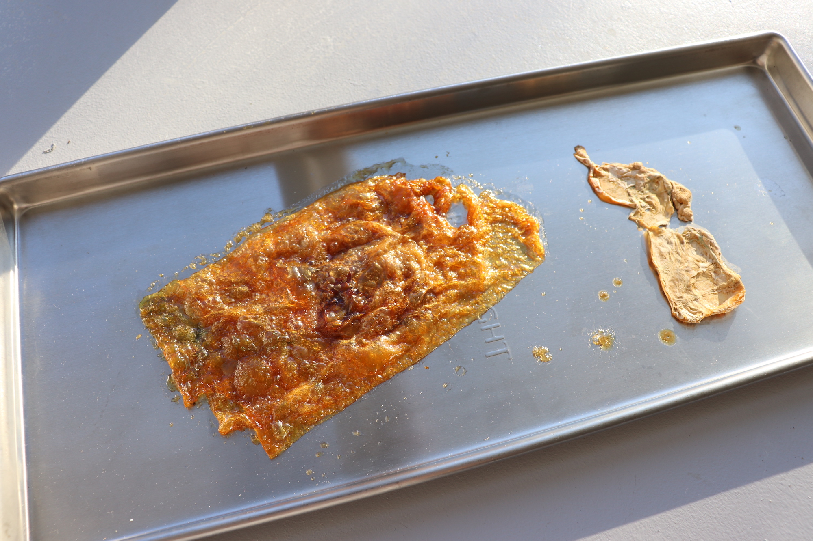
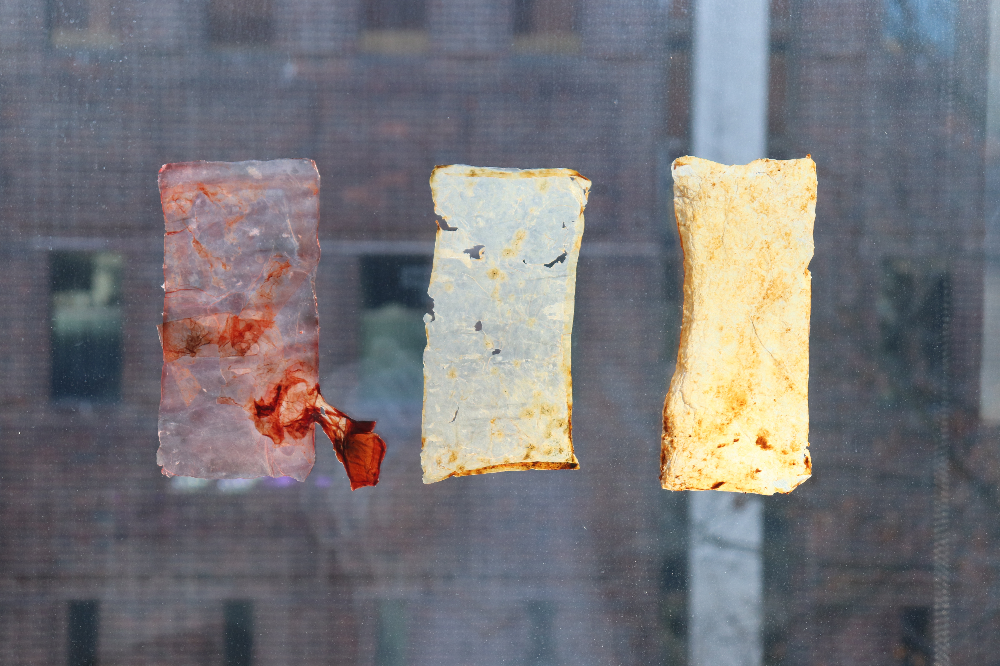
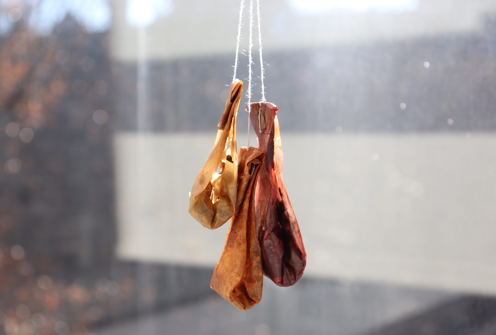
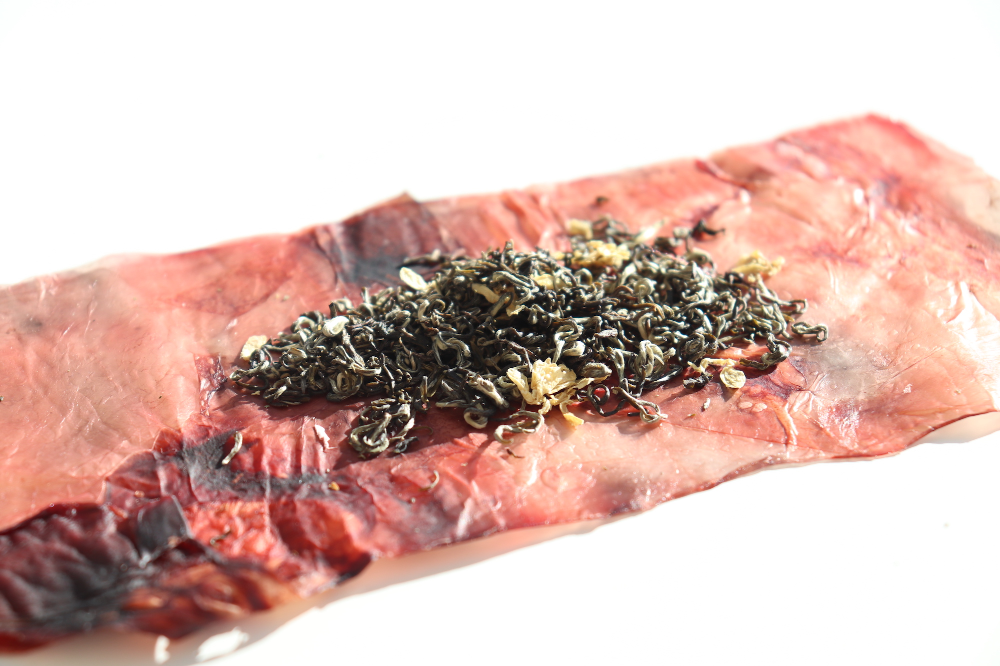
This project explores "motherhood" as a methodology, world-view, and value system — asking how we can use it to create more ethical, sustainable, and equitable contemporary design practices. Growing with microorganisms requires care, observation, and patience over time: the opposite of extractive, production-optimized design.
The material research in this project informed the bacterial cellulose work developed later in Vleur and Skinside Out.